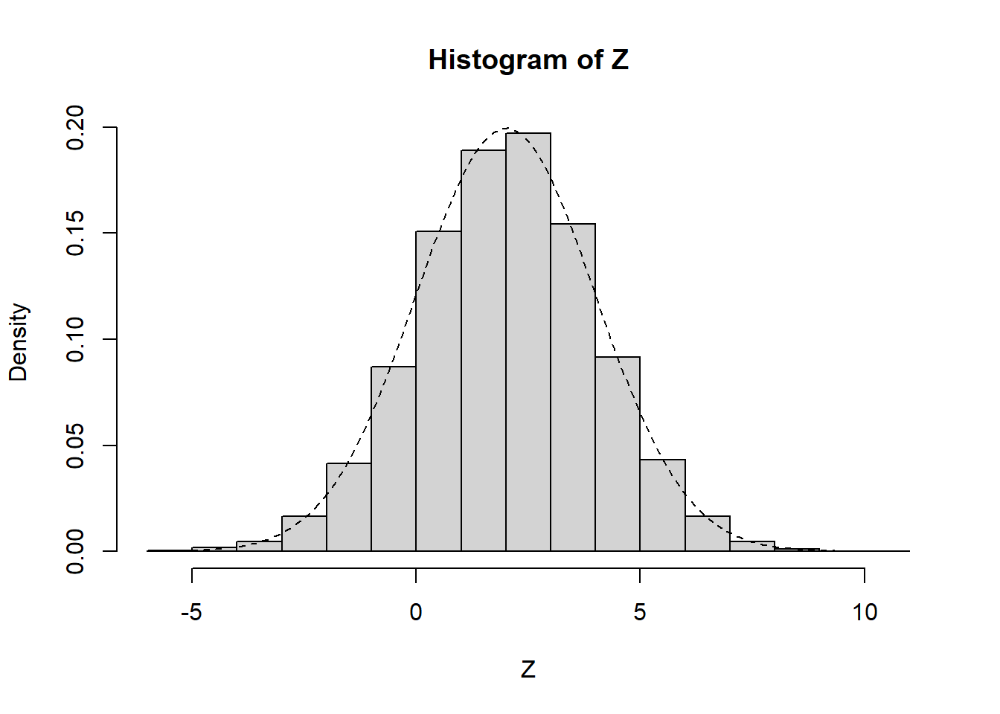
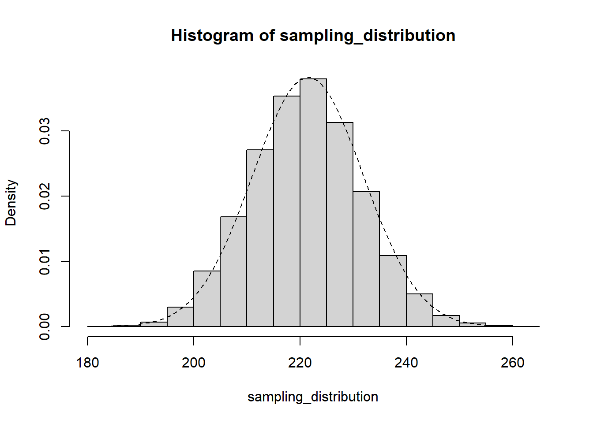

Joe Ornstein
This week, we review the basics of probability theory, which will provide us with the tools we need to express how certain or uncertain we are about the quantities of interest that we estimate from data. By the end of this week, you will be able to:
Describe the properties of probability distribution functions, starting with two that are particularly ubiquitous in social science: the Bernoulli and Normal distributions.
Use the Central Limit Theorem to predict whether a sampling distribution will be normally distributed
Compute the area under curves and the expected value of a probability distribution using integral calculus
In this problem set, you’ll demonstrate several key concepts of probability theory by randomly sampling from a deck of cards. Submit your responses as a knitted R script or Quarto document.
number
for()
Over the past few weeks, we have been computing a variety of statistics to try and estimate quantities of interest from our data. We’ve estimated population averages using sample means. We’ve estimated average treatment effect using differences-in-means and linear models. For reasons we’ve discussed, these statistics represent our best guess at the truth, given the fundamental limits of our knowledge.
But when communicating the findings of our research, we don’t just want to report our best guess. We want to honestly state how certain we are about that guess, given the strength of the evidence we’ve collected. We want to report not only a single value, but a range of the most likely values. To do that, we need to think carefully about the random process that generated our dataset.
The book and the problem set have motivated probability theory with things like coins and cards. This is all very nice for building intuition, but in class, I want us to focus on how all this connects to the concept of the sampling distribution.
If we were to randomly select a person from the United States population, what is the probability we would select a female? According to the 2020 Census, here are the total number of males and females in the population.
females <- 168.8 * 1e6 # 168.8 million males <- 162.7 * 1e6 # 162.7 million probability <- females / (males + females) probability
[1] 0.5092006
Let’s sample one.
sample(c('F', 'M'), size = 1, prob = c(probability, 1-probability))
[1] "F"
This is a Bernoulli random variable. Two possible outcomes—one with probability \(p\) and the other with probability \(1-p\). What if we randomly sampled 435 people? How many would be female?
my_sample <- sample(c('F', 'M'), size = 435, replace = TRUE, prob = c(probability, 1-probability)) sum(my_sample == 'F')
[1] 236
If you take the sum of a bunch of independent Bernoulli random variables, it follows what’s called a binomial distribution. Let’s do that repeatedly, building up a sampling distribution.
sampling_distribution <- c() for(i in 1:10000){ my_sample <- sample(c('F', 'M'), size = 435, replace = TRUE, prob = c(probability, 1-probability)) sampling_distribution[i] <- sum(my_sample == 'F') }
I don’t think it’s explained in the book how the authors plot those nice curves of the distribution functions, so I wanted to include an example here.
# generate a bunch of random normal draws Z <- rnorm(1e4, mean = 2, sd = 2) hist(Z, freq = FALSE) # add curve x <- seq(min(Z), max(Z), 0.1) lines( x = x, y = dnorm(x, mean = 2, sd = 2), lty = 'dashed' )

Now let’s create that same plot for the sampling distribution we just simulated, which should follow the binomial distribution.
hist(sampling_distribution, freq = FALSE) x <- seq(min(sampling_distribution), max(sampling_distribution), by = 1) lines(x = x, y = dbinom(x, size = 435, prob = probability), lty = 'dashed')

Using this sampling distribution, we can explore a few key ideas.
On average, how many females should we expect to be in our sample? Well, the expected value of a binomial distribution is \(np\), where \(n\) is the sample size and \(p\) is the probability that each person sampled will be a female.
expected_value <- 435 * probability expected_value
[1] 221.5023
We say that our sample statistic is an unbiased estimator if its average value is roughly equal to that expected value.
mean(sampling_distribution)
[1] 221.5604
I want to take a moment to marvel at this fact before we move on. There are over 330 million people in the United States. If I want to know how many of them are females, I could do one of two things. Either I could try to contact every single person in the country—as the Census Bureau does every 10 years—and count up the number of males and females. Or I could take a random sample of a few hundred people, and the percent female in that sample will, on average, give us a good approximation of what the other 330 million look like.
But averages can be deceiving! We don’t just want to know whether we’ll be right on average. We want to know how far from the truth we might end up with our particular sample.
What is the standard deviation of the sampling distribution?
sd(sampling_distribution)
[1] 10.4684
The standard deviation of a sampling distribution is is called the standard error, and it’s a very important number for understanding hypothesis tests. The larger the standard error, the wider the range of sample statistics that could have been computed from our population, and the less certain we should be about our particular value.
Next, notice the shape of the sampling distribution in the figure above. It’s this nice bell curve that’s well-approximated by the “normal” distribution . Why is the sampling distribution normally shaped, even though the thing we’re sampling from is not normal distributed? Well that’s one of the most fascinating and magical theorems in all of statistics: the Central Limit Theorem. The sampling distribution of the mean is approximately normally distributed—as long as you have a sufficiently large sample size.
Intuition: some samples will, by chance, contain an unrepresentatively large number of females. Some will contain an unrepresentatively small number females. But most of the time, the females and non-females will cancel each other out, such that the mass of the distribution is centered around the truth.
There are a bunch of nice simulations that showing the Central Limit Theorem in action. In class, you’ll get to play around with one.
Normal distributions are nice. They allow us to say precisely how far a sample estimate is likely to deviate from the truth. For example, we know that about 68% of a normal distribution falls within 1 standard deviation of the mean.
expected_value <- mean(sampling_distribution) standard_error <- sd(sampling_distribution) num_draws <- length(sampling_distribution) within_1sd <- sum(sampling_distribution > expected_value - standard_error & sampling_distribution < expected_value + standard_error) within_1sd / num_draws
[1] 0.6835
And about 95% of observations will fall within two standard deviations.
within_2sd <- sum(sampling_distribution > expected_value - 2*standard_error & sampling_distribution < expected_value + 2*standard_error) within_2sd / num_draws
[1] 0.9559
And about 99.7% will fall within 3 standard deviations. It’s super rare to get an observation that far away from the expected value.
within_3sd <- sum(sampling_distribution > expected_value - 3*standard_error & sampling_distribution < expected_value + 3*standard_error) within_3sd / num_draws
[1] 0.997
As of July 2024, there are 125 females in the 435-member US House of Representatives. What’s the probability that we’d have that few females in a group of 435 people randomly selected from the US population?
sum(sampling_distribution <=125)
[1] 0
Approximately zero. Out of 10,000 random samples, we didn’t get a single one with that few females. To be precise, the probability of a sample statistic that low is 0.0000000000000000005%.
pbinom(125, size = 435, prob = probability)
[1] 4.841104e-21
So if I draw a sample of 435 individuals, then 95% of the time, my sample statistic will be within…
2*sd(sampling_distribution)
[1] 20.93679
…of the population average. This is what pollsters call the margin of error.
Another way of describing this sampling variability is with a confidence interval. You construct a confidence interval by taking your sample estimate plus or minus 2 standard errors. Because the sample mean is within 2 standard deviations of the truth 95% of the time, the 95% confidence interval will contain the true value approximately 95% of the time.
In class, we’ll explore how the estimated effect of a treatment can vary even if we have data on the entire population. For this exercise, load the potential-outcomes.csv dataset.